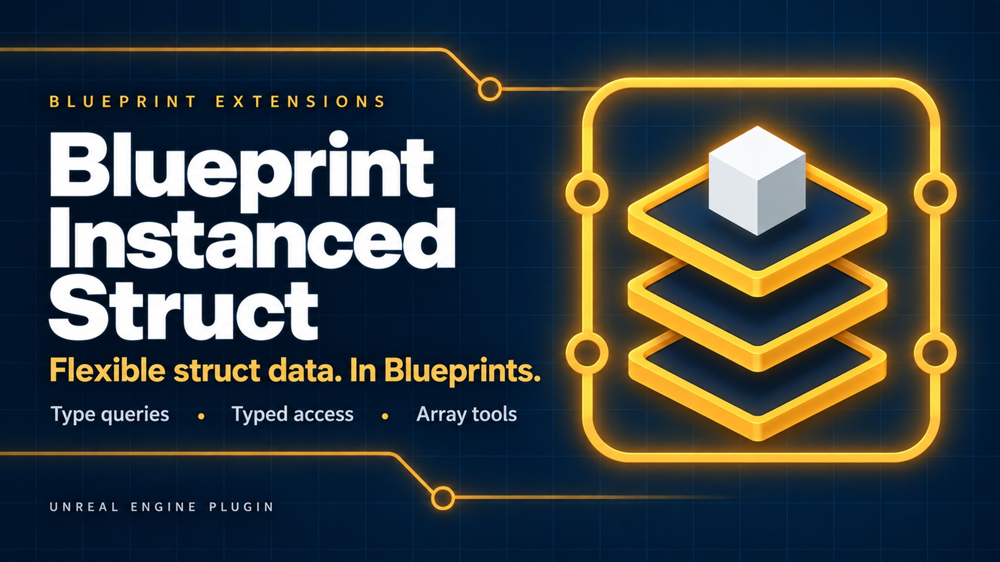

Blueprint Instanced Struct helps you read, change and find values that use different struct types. For example, you can keep weapon and potion data in the same inventory array.
Unreal Engine's Instanced Struct type holds one struct value at a time. You can replace it with a value of another struct type while the game runs. An array of Instanced Struct values can hold a different type in each entry.
This plugin adds nodes to choose types, check values, search arrays and convert data to text and back. It uses the engine's existing FInstancedStruct type. You can use it entirely in Blueprint.
The failure output runs if the value is empty or has the wrong type. Use Set Struct Value when you want to replace the value already stored in the variable.
Find all nodes under Instanced Struct in the Blueprint menu. You can use them without placing an actor or changing Project Settings.
An Instanced Struct is either empty or contains one complete struct value and its type. Setting a new value replaces the previous value.
Use Is Valid to check whether it contains a struct. Use Get Script Struct to get its type.
Make and Set copy a struct into the Instanced Struct value. Get copies it out. Changing the output from Get does not change the stored value. Call Set Struct Value with your edited struct to store the change.
C++ structs can have parent and child types. Is Struct Type accepts a child value when you check for its parent type. Get Struct Value can read the fields defined by that parent.
Structs made in Blueprint cannot inherit from each other. Their types must match exactly.
Connect one struct value to Make Instanced Struct. The input pin takes the connected struct's type, and the result holds a copy of its value. This kind of pin is called a wildcard pin.
Use Make Default Of Type when you choose the type while the game runs and have no value to copy. It creates a value with that struct's defaults.
The node is pure, so it needs no execution wire and can be used while building an array. An empty or invalid Struct Type input produces an empty Instanced Struct value.
Get Struct Value and Set Struct Value show a type picker on the node. Choose a struct to set the pin's type. You can then split the pin into fields or connect it to other nodes.
The picker lists structs that Blueprint variables can use. A connected struct pin sets the type automatically and overrides the picker. Disconnect that pin before choosing another type.
This choice is made while editing the graph. It determines the pin type when the Blueprint compiles.
Get copies the stored value into its typed output. The success execution output runs if the stored type is compatible with the selected type. An empty value or a different, incompatible type runs the failure output. Use the copied value only after success.
Set replaces the stored value with a copy of the connected struct. The input accepts one struct. For an array, store Instanced Struct values as its entries and use the array nodes below.
To save a value as text and read it back later, use Export To String and Parse From String.
Export To String converts the struct type and field values to text. Store that text in your own save or configuration system. Use Parse From String to create an Instanced Struct from it.
Check the Parse result before using the value. Parsing fails if the text is invalid or Unreal Engine cannot find the stored struct type.
If you rename a struct or change its fields, existing saved text may need an update. Plan how older saves will be read when you make those changes.
These nodes take an array of Instanced Struct values and a Struct Type:
| Node | Result |
|---|---|
| Find First Of Type | Returns the first matching value and its index. The index is -1 if no match exists. |
| Filter By Type | Returns all matching values in their original order. |
| Contains Type | Checks whether at least one matching entry exists. |
| Count Of Type | Returns the number of matching entries. |
| Remove All Of Type | Removes matching entries from the input array and returns how many were removed. |
Type checks follow the inheritance rules described above. Use Contains Type when you only need a yes-or-no answer. Use Filter By Type when you need the matching values.
These examples show how to use the nodes in common Blueprint tasks.
A payload is the data carried by an event. For example, a damage event can carry a damage amount and a target, while a healing event carries a healing amount.
Use a C++ parent struct if several event types need to match the same parent type check.
Keep shared fields, such as an item ID, in your inventory entry. Store each item's specific data in an Instanced Struct.
Weapon, potion and quest-item structs can share one array. Each struct only needs the fields used by that kind of item.
Store a Struct Type in your project data and pass it to Make Default Of Type. The node creates a value with that type's defaults.
Use this when a designer chooses the struct type in data and the game creates the value later.
Check whether the value is empty and whether its type matches the selected output type. Use To String to print it or Get Script Struct to check its type. For structs made in Blueprint, the types must match exactly.
Check the picker and any connected struct pin. The connected pin sets the type. Disconnect it before choosing a different type in the picker.
Make, Get and Set accept one struct at a time. Use an array of Instanced Struct values for multiple entries. Use the array nodes to find, filter, count or remove them.
The exported text includes the struct type. If its name or path changes, add an Unreal Engine redirect from the old type to the new one, or update the type information in the saved text.
Unreal Engine also provides some basic Instanced Struct nodes. This plugin groups its Make, Get, Set, validity, reset and comparison nodes with its additional tools under Instanced Struct.
For help or bug reports, contact tomasz.klin@gmail.com.
Include your Unreal Engine version, plugin version and the struct type involved. A screenshot of the relevant graph is helpful. This manual covers plugin version 1.0.0.